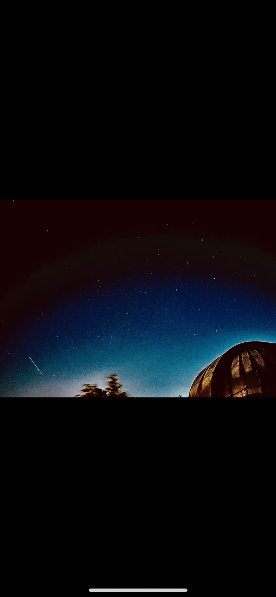
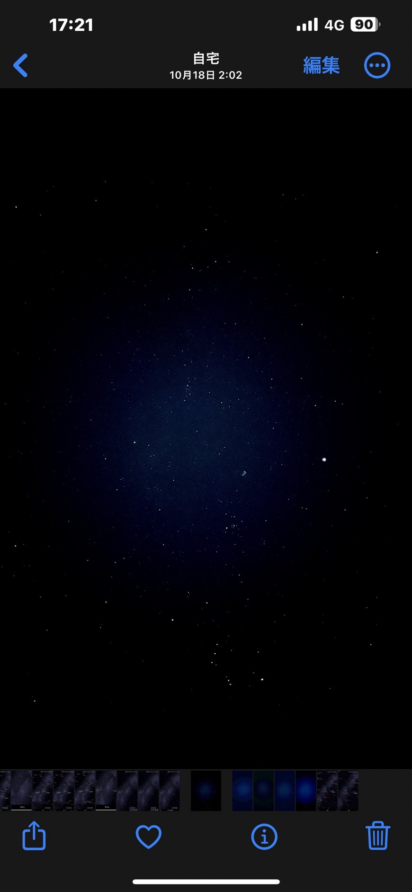

スマートフォンで星空撮影
機種によりますが、スマートフォンで手軽に夜空を撮影できるものもあります。
iPhone 13 Pro で撮影した画像
焦点距離 : 13mm; F値 : 1.8; ISO感度 : 3200; 露出時間 : 2.3 秒
夏の大三角形付近(はくちょう座, こと座, わし座, や座, いるか座)

カシオペヤ座, ペルセウス座, ぎょしゃ座, おうし座, オリオン座

戻る